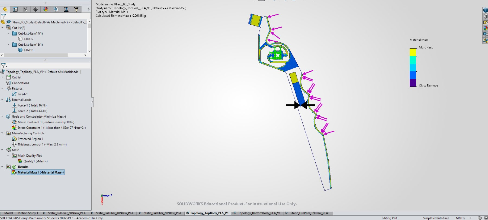

Project
Additive Manufacturing Plier Project
DfAM plier project using topology optimisation, CAD iteration, static-study visuals, slicer setup, support settings, and manufacturability trade-offs for a printed mechanical tool.
Mechanical tool design shaped by additive manufacturing constraints, showing concept development, topology optimisation, SolidWorks static-study visuals, slicer preparation, support settings, and manufacturability trade-offs.
